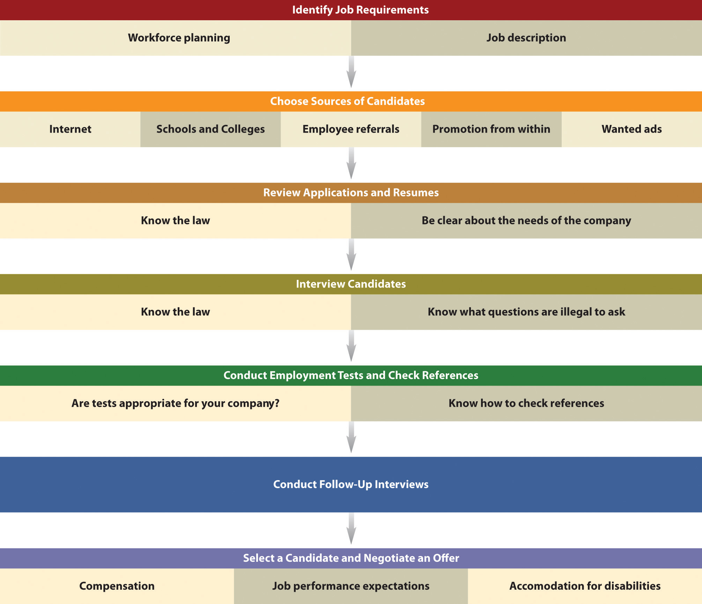

Source: Used with permission from Unnamed Publisher.
The idea for Unnamed Publisher, the publisher of this book, started on a business trip to Chicago in 2006. Co-founders Jeff Shelstad and Eric Frank, who were both working at a large educational publisher at the time, decided they wanted to move away from the limitations and the frustrations of the traditional publishing industry. Veterans of the higher education publishing industry. Their vision was to create a new publishing company that offered a lot more choices to students, professors, and authors.
“Students can’t afford to pay $200 for a textbook. The old business model wasn’t adapting fast enough to the Internet, where so much information was available for free or low-cost,” says Jeff, referring to traditional publishers. “We knew there had to be a better way to publish high-quality material and eliminate price and access barriers.”
Since its beginning in 2007, more than thirty employees have joined this fast-growing start-up, located just north of New York City, in Irvington, New York. The company has become a recognized pioneer in transforming higher educational publishing and textbook affordability.
FWK is upending the $8 billion college textbook industry with a new business model that focuses on affordability and personalization. Professors who assign FWK books are free to revise and edit the material to match their course and help improve student success. Students have a choice of affordable print and digital formats that they can access online or on a laptop, tablet, e-reader or smartphone for a fraction of the price that most traditional publishers charge.
Rather than hamper the company’s growth, the economic downturn has actually highlighted the value of its products and the viability of its business model. Despite the bad economy, FWK has been able to raise over $30 million in venture capital. Clearly, they are doing something right.
The numbers tell the story. Since the launch of their first ten books in spring 2009 (there are more than one hundred fifteen books to date), faculty at more than two thousand institutions in forty-four countries have adopted FWK books. As a result, more than 600,000 students have benefited from affordable textbook choices that lower costs, increase access and personalize learning.
In 2010, 2011 and 2012, EContent magazine named FWK as one of the top one hundred companies that matter most in the digital content industry. FWK was also named 2010 Best Discount Textbook Provider by the Education Resources People’s Choice Awards.
What is particularly refreshing is Jeff’s philosophy about people and work. “Give talented people an opportunity to build something meaningful, the tools to do it, and the freedom to do one’s best.” He believes in flexibility with people and their jobs, and, to that end, employees have the option to work remotely. There is no question that FWK is an innovator in the educational publishing industry, but it also knows how to treat people well and provide a challenging environment that fosters personal growth.
Source: Interview with Jeff Shelstad, March 31, 2011; “Unnamed Publisher Named to EContent Magazine Top 100 Digital Companies of 2010,” Pressitt, December 15, 2010, accessed February 2, 2012, http://pressitt.com/smnr/Flat-World-Knowledge-Named-to-EContent-Magazines-2010-List-of-Top-100-Digital-Companies-/2961/; Alexandra Torres, “Company Offers Alternatives to Enter the World of Knowledge,” The Ticker, October 10, 2010, accessed February 2, 2012, http://www.theticker.org/mobile/company-offers-alternatives-to-enter-the-world-of-knowledge-1.2360719; John Tozzi, “Online Startups Target College Book Costs,” Bloomberg BusinessWeek, September 23, 2010, accessed February 2, 2012, www.BusinessWeek.com/smallbiz/content/sep2010/sb20100922_892919.htm.
All small businesses need to be concerned about management principles. Management decisions will impact the success of a business, the health of its work environment, its growth if growth is an objective, and customer value and satisfaction. Seat-of-the-pants management may work temporarily, but its folly will inevitably take a toll on a business. This section discusses management principles, levels, and skills—all areas that small business owners should understand so that they can make informed and effective choices for their businesses.
There is no universally accepted definition for management. The definitions run the gamut from very simple to very complex. For our purposes, we define managementThe application of planning, organizing, staffing, directing, and controlling functions in the most efficient manner possible to accomplish meaningful organizational objectives. as “the application of planning, organizing, staffing, directing, and controlling functions in the most efficient manner possible to accomplish meaningful organizational objectives.”John M. Ivancevich and Thomas N. Duening, Business: Principles, Guidelines, and Practices (Mason, OH: Atomic Dog Publishing, 2007), 172. Put more simply, management is all about achieving organizational objectives through people and other resources.David L. Kurtz, Contemporary Business (Hoboken, NJ: John Wiley & Sons, 2011), 254.
Management principles apply to all organizations—large or small, for-profit or not-for-profit. Even one-person small businesses need to be concerned about management principles because without a fundamental understanding of how businesses are managed, there can be no realistic expectation of success. Remember that the most common reason attributed to small business failure is failure on the part of management.
On any given day, small business owners and managers will engage in a mix of many different kinds of activities—for example, deal with crises as they arise, read, think, write, talk to people, arrange for things to be done, have meetings, send e-mails, conduct performance evaluations, and plan. Although the amount of time that is spent on each activity will vary, all the activities can be assigned to one or more of the five management functions: planning, organizing, staffing, directing, and controlling (Figure 12.1 "Management Functions").
Figure 12.1 Management Functions

PlanningThe process of anticipating future events and conditions and determining courses of action for achieving organizational objectives. “is the process of anticipating future events and conditions and determining courses of action for achieving organizational objectives.”David L. Kurtz, Contemporary Business (Hoboken, NJ: John Wiley & Sons, 2011), 257. It is the one step in running a small business that is most commonly skipped, but it is the one thing that can keep a business on track and keep it there.“Management Principles,” Small Business Notes, accessed February 2, 2012, www.smallbusinessnotes.com/managing-your-business/management-principles. Planning helps a business realize its vision, get things done, show when things cannot get done and why they may not have been done right, avoid costly mistakes, and determine the resources that will be needed to get things done.John M. Ivancevich and Thomas N. Duening, Business: Principles, Guidelines, and Practices (Mason, OH: Atomic Dog Publishing, 2007), 176; David L. Kurtz, Contemporary Business (Hoboken, NJ: John Wiley & Sons, 2011), 257. Business planning for the small business is discussed in Chapter 5 "The Business Plan", and marketing planning is discussed in Chapter 8 "The Marketing Plan".
OrganizingGrouping people and assigning activities so that job tasks and the mission can be properly carried out. “consists of grouping people and assigning activities so that job tasks and the mission can be properly carried out.”John M. Ivancevich and Thomas N. Duening, Business: Principles, Guidelines, and Practices (Mason, OH: Atomic Dog Publishing, 2007), 176. Establishing a management hierarchy is the foundation for carrying out the organizing function.
Contrary to what some people may believe, the principle of organizing is not dead. Rather, it is clearly important “to both the organization and its workers because both the effectiveness of organizations and worker satisfaction require that there be clear and decisive direction from leadership; clarity of responsibilities, authorities, and accountabilities; authority that is commensurate with responsibility and accountability; unified command (each employee has one boss); a clear approval process; and, rules governing acceptable employee behavior.”“Traditional Management Principles,” Small Business Notes, accessed February 2, 2012, www.smallbusinessnotes.com/managing-your-business/traditional-management -principles.html. Except for a small business run solely by its owner, every small business needs a management hierarchy—no matter how small. Each person in the business should know who is responsible for what, have the authority to carry out his or her responsibilities, and not get conflicting instructions from different bosses. The absence of these things can have debilitating consequences for the employees in particular and the business in general.“Traditional Management Principles,” Small Business Notes, accessed February 2, 2012, www.smallbusinessnotes.com/managing-your-business/traditional-management -principles.html.
The organizational design and structure of a small business are important parts of organizing, which are discussed in Section 12.2 "Organizational Design".
Glassblowing Business Thrives
Lesson learned: Everyone should know his or her role in the business.
www.cnn.com/video/#/video/living/2010/10/15/mxp.sbs.glass.business.hln?iref=videosearch
The staffingSelecting, placing, training, developing, compensating, and evaluating employees. function involves selecting, placing, training, developing, compensating, and evaluating (the performance appraisal) employees.John M. Ivancevich and Thomas N. Duening, Business: Principles, Guidelines, and Practices (Mason, OH: Atomic Dog Publishing, 2007), 176. Small businesses need to be staffed with competent people who can do the work that is necessary to make the business a success. It would also be extremely helpful if these people could be retained. Many of the issues associated with staffing in a small business are discussed in Section 12.4 "People".
DirectingThe managerial function that initiates action. is the managerial function that initiates action: issuing directives, assignments, and instructions; building an effective group of subordinates who are motivated to do what must be done; explaining procedures; issuing orders; and making sure that mistakes are corrected.John M. Ivancevich and Thomas N. Duening, Business: Principles, Guidelines, and Practices (Mason, OH: Atomic Dog Publishing, 2007), 177; David L. Kurtz, Contemporary Business (Hoboken, NJ: John Wiley & Sons, 2011), 257. Directing is part of the job for every small business owner or manager. LeadingThe process of influencing people to work toward a common goal. and motivatingThe process of providing reasons for people to work in the best interests of an organization. work together in the directing function. Leading “is the process of influencing people to work toward a common goal [and] motivating is the process of providing reasons for people to work in the best interests of an organization.”William M. Pride, Robert J. Hughes, and Jack R. Kapoor, Business (Boston: Houghton Mifflin, 2008), 224.
Different situations call for different leadership styles. In a very influential research study, Kurt Lewin established three major leadership styles: autocratic, democratic, and laissez-faire.Kurt Lewin, Ronald Lippitt, and Ralph K. White, “Patterns of Aggressive Behavior in Experimentally Created ‘Social Climates,’” Journal of Social Psychology 10, no. 2 (1939): 269–99. Although good leaders will use all three styles depending on the situation, with one style normally dominant, bad leaders tend to stick with only one style.Don Clark, “Leadership Styles,” Big Dog and Little Dog’s Performance Juxtaposition, June 13, 2010, accessed February 2, 2012, www.nwlink.com/~donclark/leader/leadstl.html.
Autocratic leadershipThe leader makes decisions without involving others. occurs when a leader makes decisions without involving others; the leader tells the employees what is to be done and how it should be accomplished.Kurt Lewin, “Lewin’s Leadership Styles,” Changing Minds, accessed February 2, 2012, changingminds.org/disciplines/leadership/styles/lewin_style.htm; Don Clark, “Leadership Styles,” Big Dog and Little Dog’s Performance Juxtaposition, June 13, 2010, accessed February 2, 2012, www.nwlink.com/~donclark/leader/leadstl.html. Lewin et al. found that this style creates the most discontent.Kurt Lewin, Ronald Lippitt, and Ralph K. White, “Patterns of Aggressive Behavior in Experimentally Created ‘Social Climates,’” Journal of Social Psychology 10, no. 2 (1939): 269–99. However, this style works when all the information needed for a decision is present, there is little time to make a decision, the decision would not change as a result of the participation of others, the employees are well motivated, and the motivation of the people who will carry out subsequent actions would not be affected by whether they are involved in the decision or not.Kurt Lewin, “Lewin’s Leadership Styles,” Changing Minds, accessed February 2, 2012, changingminds.org/disciplines/leadership/styles/lewin_style.htm; Don Clark, “Leadership Styles,” Big Dog and Little Dog’s Performance Juxtaposition, June 13, 2010, accessed February 2, 2012, www.nwlink.com/~donclark/leader/leadstl.html. This leadership style should not be used very often.
Democratic leadershipThe leader involves other people in decision making. involves other people in the decision making—for example, subordinates, peers, superiors, and other stakeholders—but the leader makes the final decision. Rather than being a sign of weakness, this participative form of leadership is a sign of strength because it demonstrates respect for the opinions of others. The extent of participation will vary depending on the leader’s strengths, preferences, beliefs, and the decision to be made, but it can be as extreme as fully delegating a decision to the team.“Participative Leadership,” Changing Minds, accessed February 2, 2012, changingminds.org/disciplines/leadership/styles/participative_leadership.htm. This leadership style works well when the leader has only part of the information and the employees have the other part. The participation is a win-win situation, where the benefits are mutual. Others usually appreciate this leadership style, but it can be problematic if there is a wide range of opinions and no clear path for making an equitable, final decision.Kurt Lewin, “Lewin’s Leadership Styles,” Changing Minds, accessed February 2, 2012, changingminds.org/disciplines/leadership/styles/lewin_style.htm; Don Clark, “Leadership Styles,” Big Dog and Little Dog’s Performance Juxtaposition, June 13, 2010, accessed February 2, 2012, www.nwlink.com/~donclark/leader/leadstl.html. In experiments that Lewin et al. conducted with others, the democratic leadership style was revealed as the most effective.Kurt Lewin, Ronald Lippitt, and Ralph K. White, “Patterns of Aggressive Behavior in Experimentally Created ‘Social Climates,’” Journal of Social Psychology 10, no. 2 (1939): 269–99.
Laissez-faire leadership (or delegative or free-reign leadership)Leadership that minimizes the leader’s involvement in decision making, but the leader is responsible for the final decision. minimizes the leader’s involvement in decision making. Employees are allowed to make decisions, but the leader still has responsibility for the decisions that are made. The leader’s role is that of a contact person who provides helpful guidance to accomplish objectives.John M. Ivancevich and Thomas N. Duening, Business: Principles, Guidelines, and Practices (Mason, OH: Atomic Dog Publishing, 2007), 178. This style works best when employees are self-motivated and competent in making their own decisions, and there is no need for central coordination; it presumes full trust and confidence in the people below the leader in the hierarchy.Kurt Lewin, “Lewin’s Leadership Styles,” Changing Minds, accessed February 2, 2012, changingminds.org/disciplines/leadership/styles/lewin_style.htm; Don Clark, “Leadership Styles,” Big Dog and Little Dog’s Performance Juxtaposition, June 13, 2010, accessed February 2, 2012, www.nwlink.com/~donclark/leader/leadstl.html. However, this is not the style to use if the leader wants to blame others when things go wrong.Don Clark, “Leadership Styles,” Big Dog and Little Dog’s Performance Juxtaposition, June 13, 2010, accessed February 2, 2012, www.nwlink.com/~donclark/leader/leadstl.html. This style can be problematic because people may tend not to be coherent in their work and not inclined to put in the energy they did when having more visible and active leadership.Kurt Lewin, Ronald Lippitt, and Ralph K. White, “Patterns of Aggressive Behavior in Experimentally Created ‘Social Climates,’” Journal of Social Psychology 10, no. 2 (1939): 269–99; Kurt Lewin, “Lewin’s Leadership Styles,” Changing Minds, accessed February 2, 2012, changingminds.org/disciplines/leadership/styles/lewin_style.htm.
Good leadership is necessary for all small businesses. Employees need someone to look up to, inspire and motivate them to do their best, and perhaps emulate. In the final analysis, leadership is necessary for success. Without leadership, “the ship that is your small business will aimlessly circle and eventually run out of power or run aground.”Susan Ward, “5 Keys to Leadership for Small Business,” About.com, accessed February 2, 2012, sbinfocanada.about.com/od/smallbusinesslearning/a/leadership1.htm.
Here are some examples of common leadership styles that should be avoided.
ControllingThe process of evaluating and regulating ongoing activities to ensure that the goals are achieved. is about keeping an eye on things. It is “the process of evaluating and regulating ongoing activities to ensure that goals are achieved.”William M. Pride, Robert J. Hughes, and Jack R. Kapoor, Business (Boston: Houghton Mifflin, 2008), 224. Controlling provides feedback for future planning activities and aims to modify behavior and performance when deviations from plans are discovered.John M. Ivancevich and Thomas N. Duening, Business: Principles, Guidelines, and Practices (Mason, OH: Atomic Dog Publishing, 2007), 176. There are four commonly identified steps in the controlling process.John M. Ivancevich and Thomas N. Duening, Business: Principles, Guidelines, and Practices (Mason, OH: Atomic Dog Publishing, 2007), 176; William M. Pride, Robert J. Hughes, and Jack R. Kapoor, Business (Boston: Houghton Mifflin, 2008), 224. (See Figure 12.2 "The Controlling Function".) Setting performance standards is the first step. Standards let employees know what to expect in terms of time, quality, quantity, and so forth. The second step is measuring performance, where the actual performance or results are determined. Comparing performance is step three. This is when the actual performance is compared to the standard. The fourth and last step, taking corrective action, involves making whatever actions are necessary to get things back on track. The controlling functions should be circular in motion, so all the steps will be repeated periodically until the goal is achieved.
Figure 12.2 The Controlling Function

As a small business grows, it should be concerned about the levels or the layers of management. Also referred to as the management hierarchyThe three levels of management: top or executive, middle, and first-line or supervisory. (Figure 12.3 "The Management Hierarchy"), there are typically three levels of management: top or executive, middle, and first-line or supervisory. To meet a company’s goals, there should be coordination of all three levels.
Figure 12.3 The Management Hierarchy

Top managementDevotes most of its time to developing the mission, long-range plans, and strategy of a business., also referred to as the executive level, guides and controls the overall fortunes of a business.William M. Pride, Robert J. Hughes, and Jack R. Kapoor, Business (Boston: Houghton Mifflin, 2008), 226. This level includes such positions as the president or CEO, the chief financial officer, the chief marketing officer, and executive vice presidents. Top managers devote most of their time to developing the mission, long-range plans, and strategy of a business—thus setting its direction. They are often asked to represent the business in events at educational institutions, community activities, dealings with the government, and seminars and sometimes as a spokesperson for the business in advertisements. It has been estimated that top managers spend 55 percent of their time planning.John M. Ivancevich and Thomas N. Duening, Business: Principles, Guidelines, and Practices (Mason, OH: Atomic Dog Publishing, 2007), 183.
Middle managementA conduit between top management and first-line management. is probably the largest group of managers. This level includes such positions as regional manager, plant manager, division head, branch manager, marketing manager, and project director. Middle managers, a conduit between top management and first-line management, focus on specific operations, products, or customer groups within a business. They have responsibility for developing detailed plans and procedures to implement a firm’s strategic plans.David L. Kurtz, Contemporary Business, 13th Edition Update (Hoboken, NJ: John Wiley & Sons, 2011), 255.
First-line or supervisory managementThe group that works directly with the people who produce and sell the goods and/or the services of a business and implements the plans of middle management. is the group that works directly with the people who produce and sell the goods and/or the services of a business; they implement the plans of middle management.David L. Kurtz, Contemporary Business, 13th Edition Update (Hoboken, NJ: John Wiley & Sons, 2011), 255. They coordinate and supervise the activities of operating employees, spending most of their time working with and motivating their employees, answering questions, and solving day-to-day problems.William M. Pride, Robert J. Hughes, and Jack R. Kapoor, Business (Boston: Houghton Mifflin, 2008), 227. Examples of first-line positions include supervisor, section chief, office manager, foreman, and team leader.David L. Kurtz, Contemporary Business, 13th Edition Update (Hoboken, NJ: John Wiley & Sons, 2011), 255; William M. Pride, Robert J. Hughes, and Jack R. Kapoor, Business (Boston: Houghton Mifflin, 2008), 227.
In many small businesses, people often wear multiple hats. This happens with management as well. One person may wear hats at each management level, and this can be confusing for both the person wearing the different hats and other employees. It is common for the small business owner to do mostly first-level management work, with middle or top management performed only in response to a problem or a crisis, and top-level strategic work rarely performed.John Seiffer, “3 Levels of Management,” Better CEO, April 14, 2006, accessed June 1, 2012, betterceo.com/2006/04/14/3-levels-of-management/. This is not a good situation. If the small business is large enough to have three levels of management, it is important that there be clear distinctions among them—and among the people who are in those positions. The small business owner should be top management only. This will eliminate confusion about responsibilities and accountabilities.
Management skillThe ability to carry out the process of reaching organizational goals by working with and through people and other organizational resources. “is the ability to carry out the process of reaching organizational goals by working with and through people and other organizational resources.”Samuel C. Certo and S. Trevis Certo, Modern Management: Concepts and Skills (Upper Saddle River, NJ: Prentice Hall, 2012), 11. Possessing management skill is generally considered a requirement for success.Les Worral and Cary Cooper, “Management Skills Development: A Perspective on Current Issues and Setting the Future Agenda,” Leadership & Organization Development Journal 22, no. 1 (2001): 34–39, as cited in Samuel C. Certo and S. Trevis Certo, Modern Management: Concepts and Skills (Upper Saddle River, NJ: Prentice Hall, 2012), 11. An effective manager is the manager who is able to master four basic types of skills: technical, conceptual, interpersonal, and decision making.
Technical skillsAbilities related to working with processes or physical objects. “are the manager’s ability to understand and use the techniques, knowledge, and tools and equipment of a specific discipline or department.”David L. Kurtz, Contemporary Business, 13th Edition Update (Hoboken, NJ: John Wiley & Sons, 2011), 256. These skills are mostly related to working with processes or physical objects. Engineering, accounting, and computer programming are examples of technical skills.Samuel C. Certo and S. Trevis Certo, Modern Management: Concepts and Skills (Upper Saddle River, NJ: Prentice Hall, 2012), 11. Technical skills are particularly important for first-line managers and are much less important at the top management level. The need for technical skills by the small business owner will depend on the nature and the size of the business.
Conceptual skillsA manager’s ability to see an organization as a unified whole and understand how each part of the overall organization interacts with other parts. “determine a manager’s ability to see the organization as a unified whole and to understand how each part of the overall organization interacts with other parts.”David L. Kurtz, Contemporary Business, 13th Edition Update (Hoboken, NJ: John Wiley & Sons, 2011), 257. These skills are of greatest importance to top management because it is this level that must develop long-range plans for the future direction of a business. Conceptual skills are not of much relevance to the first-line manager but are of great importance to the middle manager. All small business owners need such skills.
Interpersonal skillsThe ability to communicate with, motivate, and lead employees to complete assigned activities. “include the ability to communicate with, motivate, and lead employees to complete assigned activities,”David L. Kurtz, Contemporary Business, 13th Edition Update (Hoboken, NJ: John Wiley & Sons, 2011), 256. hopefully building cooperation within the manager’s team. Managers without these skills will have a tough time succeeding. Interpersonal skills are of greatest importance to middle managers and are somewhat less important for first-line managers. They are of least importance to top management, but they are still very important. They are critical for all small business owners.
The fourth basic management skill is decision makingThe ability to identify a problem or an opportunity, creatively develop alternative solutions, select an alternative, delegate authority to implement a solution, and implement and evaluate the solution. (Figure 12.4 "Management Decision Making"), the ability to identify a problem or an opportunity, creatively develop alternative solutions, select an alternative, delegate authority to implement a solution, and evaluate the solution.John M. Ivancevich and Thomas N. Duening, Business: Principles, Guidelines, and Practices (Mason, OH: Atomic Dog Publishing, 2007), 188.
Figure 12.4 Management Decision Making

Making good decisions is never easy, but doing so is clearly related to small business success. “Decisions that are based on a foundation of knowledge and sound reasoning can lead the company into long-term prosperity; conversely, decisions that are made on the basis of flawed logic, emotionalism, or incomplete information can quickly put a small business out of commission.”“Decision Making,” eNotes, March 17, 2011, accessed June 1, 2012, http://www.enotes.com/decision-making-reference/decision-making-178403.
Small business decisions should be ethical decisions. Making ethical decisions requires that the decision maker(s) be sensitive to ethical issues. In addition, it is helpful to have a method for making ethical decisions that, when practiced regularly, becomes so familiar that it is automatic. The Markkula Center for Applied Ethics recommends the following framework for exploring ethical dilemmas and identifying ethical courses of action.“A Framework for Thinking Ethically,” Santa Clara University, accessed June 1, 2012, www.scu.edu/ethics/practicing/decision/framework.html. However, in many if not most instances, a small business owner or manager and an employee will usually know instinctively whether a particular decision is unethical.
Recognize an Ethical Issue
Get the Facts
Evaluate Alternative Actions
Make a Decision and Test It
Act and Reflect on the Outcome
Organizing consists of grouping people and assigning activities so that job tasks and the mission of a business can be properly carried out. The result of the organizing process should be an overall structure that permits interactions among individuals and departments needed to achieve the goals and objectives of a business.David L. Kurtz, Contemporary Business, 13th Edition Update (Hoboken, NJ: John Wiley & Sons, 2011), 272. Although small business owners may believe that they do not need to adhere to the organizing principles of management, nothing could be farther from the truth.
Principles represent guidelines that managers can use in making decisions. They are not laws etched in stone. At times, principles can be used exactly as the way they are stated; at other times they should be modified or even completely ignored. Small business owners must learn through experience when and where to use [the] principles or to modify them [emphasis added]. Principles when used effectively and in the right context often bring organizational efficiencies and thus result in the growth of the business. Some organizing principles…would apply to small businesses as well as they would to large enterprises and would lead to similar benefits.Hal Babson and John Bowen, Instructor’s Manual to Accompany Business: Principles, Guidelines, and Practices (Mason, OH: Atomic Dog Publishing, 2004), 8–9.
There is no single best way to organize. Rather, the organization decision is based on a multitude of factors, including business size, market, product mix, competition, the number of employees, history, objectives and goals, and available financial resources.John M. Ivancevich and Thomas N. Duening, Business: Principles, Guidelines, and Practices (Mason, OH: Atomic Dog Publishing, 2007), 199. Each small business must decide what organizational design best fits the business.
Ivancevich and DueningJohn M. Ivancevich and Thomas N. Duening, Business: Principles, Guidelines, and Practices (Mason, OH: Atomic Dog Publishing, 2007), 200–204. maintain that there are several fundamental issues that managers need to consider when making any kind of organizational decision: clear objectives, coordination, formal and informal organization, the organization chart, formal authority, and centralization versus decentralization. Understanding these fundamentals can facilitate the creation of an organizational structure that is a good fit for a small business.
Objectives “give meaning to the business—and to the work done by employees—by determining what it is attempting to accomplish.”John M. Ivancevich and Thomas N. Duening, Business: Principles, Guidelines, and Practices (Mason, OH: Atomic Dog Publishing, 2007), 200–204. Objectives provide direction for organizing a firm, helping to identify the work that must be done to accomplish the objectives. This work, in turn, serves as the basis on which to make staffing decisions.
The resources of a small business and its employees must be coordinated to minimize duplication and maximize effectiveness.William M. Pride, Robert J. Hughes, and Jack R. Kapoor, Business (Boston: Houghton Mifflin, 2008), 263. Coordination requires informal communication with and among employees every day. All businesses must continually coordinate the activities of others—an effort that should never be underestimated. Business leaders must make sure that employees have the answers to six fundamental questions:“Reinventing the Strategic Communicator,” Strategic Communication Management, August/September 2001, 32–35, as cited in John M. Ivancevich and Thomas N. Duening, Business: Principles, Guidelines, and Practices (Mason, OH: Atomic Dog Publishing, 2007), 201.
When a one-person small business adds employees, some kind of hierarchy will be needed to indicate who does what. This hierarchy often becomes the formal organizationThe details of the roles and the responsibilities of all employees.—that is, the details of the roles and responsibilities of all employees.“Formal Organizational Structure—What Is It?,” The Business Plan, accessed February 2, 2012, www.the-business-plan.com/formal-organizational-structure.html. Formal organization tends to be static, but it does indicate who is in charge of what. This helps to prevent chaos. The formal organizational structure helps employees feel safe and secure because they know exactly what their chain of command is. The downside of a formal organizational structure is that it typically results in a slower decision-making process because of the numerous groups and people who have to be involved and consulted.“Formal Organizational Structure—What Is It?,” The Business Plan, accessed February 2, 2012, www.the-business-plan.com/formal-organizational-structure.html.
The informal organizationAll the connections and relationships that relate to how people throughout an organization actually network to get the job done. is almost never explicitly stated. It consists of all the connections and relationships that relate to how people throughout the organization actually network to get a job done. The informal organization fills the gaps that are created by the formal organization.Marshall Goldsmith and Jon Katzenbach, “Navigating the ‘Informal’ Organization,” Bloomberg BusinessWeek, February 14, 2007, accessed February 2, 2012, www.BusinessWeek.com/careers/content/feb2007/ca20070214_709560.htm. Although the informal organization is not written down anywhere, it has a tremendous impact on the success of a small business because it is “composed of natural leaders who get things done primarily through the power granted to them by their peers.”Charles Hall, Getting Results…for the Hands-On Manager (Saranac Lake, NY: American Management Association, 1986), 40–42. Informal groups and the infamous grapevine are firmly embedded in the informal organization. The grapevine (or water cooler)The informal communications network within an organization, separate from—and sometimes much faster than—formal channels of communication. “is the informal communications network within an organization,…completely separate from—and sometimes much faster than—the organization’s formal channels of communication.”William M. Pride, Robert J. Hughes, and Jack R. Kapoor, Business (Boston: Houghton Mifflin, 2008), 264. Small business owners must acknowledge the existence of the grapevine and figure out how to use it constructively.
Leading Outside the Lines
(click to see video)The formal and informal organizations need to work together to sustain peak performance over time.
The organization chartA visual representation of the formal organization of a business. is a visual representation of the formal organization of a business. The chart shows the structure of the organization and the relationships and relative ranks of its positions; it helps organize the workplace while outlining the direction of management control for subordinates.“Introduction to Organizational Charts,” OrgChart.net, July 18, 2011, accessed February 2, 2012, www.orgchart.net/wiki/Main_Page. Even the one-person small business can use some kind of organization chart to see what functions need to be performed; this will help ensure that everything that should be done is getting done.“Organization Charts,” Small Business Notes, accessed February 2, 2012, www.smallbusinessnotes.com/managing-your-business/organization-charts.html. Figure 12.5 "Organization Chart for a One-Person Small Business" illustrates a simple organization chart for a one-person retail business.“Organization Charts,” Small Business Notes, accessed February 2, 2012, www.smallbusinessnotes.com/managing-your-business/organization-charts.html.
Figure 12.5 Organization Chart for a One-Person Small Business

Organization charts offer the following benefits:“Introduction to Organizational Charts,” OrgChart.net, March 16, 2011, accessed February 2, 2012, www.orgchart.net/wiki/Main_Page; “Organization Chart,” 12 Manage—The Executive Fast Track, accessed February 2, 2012, www.12manage.com/methods_organization_chart.html.
There are, of course, several limitations to organization charts:“Organization Chart,” 12Manage—The Executive Fast Track, accessed February 2, 2012, www.12manage.com/methods_organization_chart.html.
In its early stages, a small business may choose not to create a formal organization chart. However, organization must exist even without a chart so that the business can be successful. Most small businesses find organization charts to be useful because they help the owner or the manager track growth and change in the organizational structure.William M. Pride, Robert J. Hughes, and Jack R. Kapoor, Business (Boston: Houghton Mifflin, 2008), 247. The real challenge is to create an organizational chart that reflects the real world. Small businesses have a definite advantage here because their size allows for more flexibility and manageability.
Burn Your Org Chart
(click to see video)Not all organizational charts reflect the real world.
Formal authorityThe right to give orders and set policy. is “the right to give orders and set policy.”John M. Ivancevich and Thomas N. Duening, Business: Principles, Guidelines, and Practices (Mason, OH: Atomic Dog Publishing, 2007), 203. It is organized according to a hierarchy, typically expressed in the organization chart, where one manager may have authority over some employees while being subject to the formal authority of a superior at the same time. Formal authority also encompasses the allocation of an organization’s resources to achieve its objectives.Samuel C. Certo and S. Trevis Certo, Modern Management: Concepts and Skills (Upper Saddle River, NJ: Prentice Hall, 2012), 276; John M. Ivancevich and Thomas N. Duening, Business: Principles, Guidelines, and Practices (Mason, OH: Atomic Dog Publishing, 2007), 203. The position on the organization chart will be indicative of the amount of authority and formal power held by a particular individual.
Two major types of authority that the small business owner should understand are line and staff. These authorities reflect the existing relationships between superiors and subordinates.Samuel C. Certo and S. Trevis Certo, Modern Management: Concepts and Skills (Upper Saddle River, NJ: Prentice Hall, 2012), 278. Line authorityHaving direct authority over lower positions in the hierarchy. refers to having direct authority over lower positions in the hierarchy. “A manager with line authority is the unquestioned superior for all activities of his or her subordinates.”John M. Ivancevich and Thomas N. Duening, Business: Principles, Guidelines, and Practices (Mason, OH: Atomic Dog Publishing, 2007), 203. The day-to-day tasks of those with line authority involve working directly toward accomplishing an organization’s mission, goals, and objectives.K. J. Henderson, “Features of the Line & Staff Organization Structure,” Chron.com, accessed February 2, 2012, smallbusiness.chron.com/features-line-staff -organization-structure-449.html. Examples of positions with line authority are the president, the vice president of operations, and the marketing manager. In a small business, the owner or the top manager will have line authority over his or her subordinates. The extent of line authority beyond the owner or the top manager will depend on the size of the business and the organizational vision of the owner.
Staff authorityAdvisory only; there is no authority to take action and no responsibility for revenue generation. is advisory only. There is no authority to take action (except when someone is a manager of a staff function, e.g., human resources), and there is no responsibility for revenue generation. Someone with staff authority assists those with line authority as well as others who have staff authority. Examples of staff authority are human resources, legal, and accounting, each of which is relevant to a small business. Staff personnel can be extremely helpful in improving the effectiveness of line personnel. Unfortunately, staff personnel are often the first to go when cutbacks occur. As a small business grows, a decision may be made to add staff personnel because the most significant factor in determining whether or not to add personnel is the size of a business. The larger the organization, the greater the need and the ability to hire staff personnel to provide specialized expertise.Samuel C. Certo and S. Trevis Certo, Modern Management: Concepts and Skills (Upper Saddle River, NJ: Prentice Hall, 2012), 278. Small businesses, however, may prefer to hire outside service providers for staff functions such as legal and accounting services because it would be difficult to keep such people busy full time. Remember, cash flow is king.
Centralization and decentralization are about the amount of authority to delegate. CentralizationVery little authority; job activities are not delegated to subordinates. means that little or no authority and job activities are delegated to subordinates. A relatively small number of line managers make the decisions and hold most of the authority and power. DecentralizationAuthority and job activities are delegated rather than being held by a small management group. is the opposite. Authority and job activities are delegated rather than being held by a small management group.Samuel C. Certo and S. Trevis Certo, Modern Management: Concepts and Skills (Upper Saddle River, NJ: Prentice Hall, 2012), 283; John M. Ivancevich and Thomas N. Duening, Business: Principles, Guidelines, and Practices (Mason, OH: Atomic Dog Publishing, 2007), 204.
Depending on various factors, organizations move back and forth on the centralization-decentralization continuum. For example, managing a crisis requires more centralized decision making because decisions need to be made quickly.Zhiang Lin and Kathleen M. Carley, “Organizational Design and Adaptation in Response to Crises: Theory and Practice,” Academy of Management Proceedings, 2001, B1–B6. A noncrisis or a normal work situation would favor decentralized decision making and encourages employee empowerment and delegated authority.John M. Ivancevich and Thomas N. Duening, Business: Principles, Guidelines, and Practices (Mason, OH: Atomic Dog Publishing, 2007), 204. There are no universally accepted guidelines for determining whether a centralized or a decentralized approach should be used. It has been noted, however, that, “the best organizations are those that are able to shift flexibly from one level of centralization to another in response to changing external conditions.”Francis Fukuyama, “Why There Is No Science of Public Administration,” Journal of International Affairs, Fall 2004, 189–201. Given the flexibility and the responsiveness of small businesses that originate from their size, any movement that is needed along the centralization-decentralization continuum will be much easier and quicker.
Several management principles can be used as guidelines when designing an organizational structure. Although there are many principles to consider, the focus here is on unity of command, division of work, span of control, and the scalar principle. These principles are applicable to small businesses although, as has been said earlier, they should not be seen as etched in stone. They can be modified or ignored altogether depending on the business, the situation at hand, and the experience of management.Samuel C. Certo and S. Trevis Certo, Modern Management: Concepts and Skills (Upper Saddle River, NJ: Prentice Hall, 2012), 33; John M. Ivancevich and Thomas N. Duening, Business: Principles, Guidelines, and Practices (Mason, OH: Atomic Dog Publishing, 2007), 205–206.
Unity of commandNo subordinate has more than one boss. means that no subordinate has more than one boss. Each person in a business should know who gives him or her the authority to make decisions and do the job. Having conflicting orders from multiple bosses will create confusion and frustration about which order to follow and result in contradictory instructions.John M. Ivancevich and Thomas N. Duening, Business: Principles, Guidelines, and Practices (Mason, OH: Atomic Dog Publishing, 2007), 207. In addition, violating the unity of command will undermine authority, divide loyalty, and create a situation in which responsibilities can be evaded and work efforts will be duplicated and overlapping. Abiding by the unity of command will provide discipline, stability, and order, with a harmonious relationship—relatively speaking, of course—between superior and subordinate.“Principles of Management,” Management Study Guide, accessed February 2, 2012, www.managementstudyguide.com/management_principles.htm. Unity of command makes the most sense for everyone, but it is violated on a regular basis.
The division of laborA job can be performed much more efficiently if the jobholder is allowed to specialize. is a basic principle of organizing that maintains that a job can be performed much more efficiently if the work is divided among individuals and groups so that attention and effort are focused on discrete portions of the task—that is, the jobholder is allowed to specialize.Samuel C. Certo and S. Trevis Certo, Modern Management: Concepts and Skills (Upper Saddle River, NJ: Prentice Hall, 2012), 33; John M. Ivancevich and Thomas N. Duening, Business: Principles, Guidelines, and Practices (Mason, OH: Atomic Dog Publishing, 2007), 206. The result is a more efficient use of resources and greater productivity. As mentioned earlier, small businesses are commonly staffed with people who wear multiple hats, including the owner. However, the larger the business, the more desirable it will be to have people specialize to improve efficiency and productivity. To do otherwise will be to slow down processes and use more resources than should be necessary. This will have a negative impact on the bottom line.
Span of control (span of management)The number of people or subordinates that a manager supervises. refers to the number of people or subordinates that a manager supervises. The span of control typically becomes smaller as a person moves up the management hierarchy. There is no magic number for every manager. Instead, the number will vary based on “the abilities of both the manager and the subordinates, the nature of the work being done, the location of the employees, and the need for planning and coordination.”Marce Kelly and Jim McGowen, BUSN (Mason, OH: South-Western, 2008), 206. The growing trend is to use wider spans of control. Companies are flattening their structures by reducing their layers of management, particularly middle management. This process has increased the decision-making responsibilities that are given to employees.Ashim Gupta, “Organization’s Size and Span of Control,” Practical Management, January 10, 2010, accessed February 2, 2012, www.practical-management.com/Organization-Development/Organization-s-size-and-span-of-control.html; Marce Kelly and Jim McGowen, BUSN (Mason, OH: South-Western, 2008), 206; David L. Kurtz, Contemporary Business, 13th Edition Update (Hoboken, NJ: John Wiley & Sons, 2011), 275. As a small business grows, there will likely be more management hierarchy unless the small business owner is committed to a flatter organization. Either approach will have implications for span of control.
The scalar principleAuthority and responsibility should flow in a clear, unbroken line from the highest manager to the lowest manager. maintains “that authority and responsibility should flow in a clear, unbroken line from the highest to the lowest manager.”John M. Ivancevich and Thomas N. Duening, Business: Principles, Guidelines, and Practices (Mason, OH: Atomic Dog Publishing, 2007), 207. Abiding by this principle will result in more effective decision making and communication at various levels in the organization. Breaking the chain would result in confusion about relationships and employee frustration. Following this principle is particularly important to small businesses because the tendency may otherwise be to operate on a more informal basis because of the size of the business. This would be a mistake. Even a two-person business should pay attention to the scalar principle.
Knowledge about organization structures is important for a small business that is already up and running as well as a small business in its early stages. Organizations are changing every day, so small business owners should be flexible enough to change the structure over time as the situation demands, perhaps by using the contingency approachThere is no “one best” structure appropriate for every organization. The “best” structure for an organization fits its needs for the current situation.. “The contingency approach to the structure of current organizations suggests there is no ‘one best’ structure appropriate for every organization. Rather, this approach contends the ‘best’ structure for an organization fits its needs for the situation at the time.”Patricia M. Buhler, “Changing Organizational Structures and Their Impact on Managers,” Supervision, 2011, 24–26. If a small business employs fewer than fifteen people, it may not be necessary to worry too much about its organizational structure. However, if the plans for the business include hiring more than fifteen people, having an organizational structure makes good sense because it will benefit a company’s owner, managers, employees, investors, and lenders.“A Strong Business Organization Structure Is Paramount to Business Success,” The Business Plan, accessed February 2, 2012, www.the-business-plan.com/business-organization-structure.html. There are many structure options. Functional, divisional, matrix, and network or virtual structures are discussed here.
The functional structureOrganized according to job or purpose in the organization. is overwhelmingly the choice of business start-ups and is probably the most common structure used today. This structure organizes a business according to job or purpose in the organization and is most easily recognized by departments that focus on a single function or goal. (See Figure 12.6 "An Example of a Functional Structure" for an example of a functional structure.) A start-up business is not likely to have an organization that looks like this. There may be only one or two boxes on it, representing the founder and his or her partner (if applicable).“Small Business Management Skills,” How to Start a Small Business, accessed February 2, 2012, www.how-to-start-a-small-business.com/small-business-management-skills .html. As a small business grows, the need for additional departments will grow as well.
Figure 12.6 An Example of a Functional Structure

Source: “Small Business Management Skills,” How to Start a Business, accessed February 2, 2012, http://www.how-to-start-a-small-business.com/small-business-management-skills.html.
The functional structure gives employees and their respective departments clear objectives and purpose for their work. People in accounting can focus on improving their knowledge and skills to perform that work. This structure has also been shown to work well for businesses that operate in a relatively stable environment.John M. Ivancevich and Thomas N. Duening, Business: Principles, Guidelines, and Practices (Mason, OH: Atomic Dog Publishing, 2007), 210; Kristie Lorette, “Organizational Structure Types in Companies,” Chron.com, accessed February 2, 2012, smallbusiness.chron.com/organizational-structure-types-companies-2791 .html.
At the same time, the functional structure can create divisions between departments if conflict occurs,Kristie Lorette, “Organizational Structure Types in Companies,” Chron.com, accessed February 2, 2012, smallbusiness.chron.com/organizational-structure-types -companies-2791.html. and it can become an obstruction if the objectives and the environment of the business require coordination across departments.John M. Ivancevich and Thomas N. Duening, Business: Principles, Guidelines, and Practices (Mason, OH: Atomic Dog Publishing, 2007), 211.
The divisional structureA decentralized version of the functional structure in which functions still exist in an organization but are based on product, geographic area or territory, or customer. can be seen as a decentralized version of the functional structure. The functions still exist in the organization, but they are based on product, geographic area or territory, or customer. Each division will then have its own functional department(s).Kristie Lorette, “Organizational Structure Types in Companies,” Chron.com, accessed February 2, 2012, smallbusiness.chron.com/organizational-structure-types -companies-2791.html. (See Figure 12.7 "An Example of a Divisional Structure" for an example of a divisional structure.)
Figure 12.7 An Example of a Divisional Structure

The divisional structure can work well because it focuses on individual geographic regions, customers, or products. This focus will enable greater efficiencies of operation and the building of “a common culture and esprit de corps that contributes both to higher morale and a better knowledge of the division’s portfolio.”Jason Gillikin, “Advantages and Disadvantages of Divisional Organizational Structure,” Chron.com, accessed February 2, 2012, smallbusiness.chron.com/advantages-disadvantages-divisional-organizational-structure-611.html. There are, of course, disadvantages to this structure. Competing divisions may turn to office politics, rather than strategic thinking, to guide their decision making, and divisions may become so compartmentalized as to lead to product incompatibilities.Jason Gillikin, “Advantages and Disadvantages of Divisional Organizational Structure,” Chron.com, accessed February 2, 2012, smallbusiness.chron.com/advantages-disadvantages-divisional-organizational-structure-611.html.
As a small business starts to grow in the diversity of its products, in the geographic reach of its markets, or in its customer bases, there is an evolution away from the functional structure to the divisional structure. However, significant growth would be needed before the divisional structure should be put into place.
The matrix structureBrings together specialists from different areas of a business to work on different projects on a short-term basis. combines elements of the functional and the divisional structures, bringing together specialists from different areas of a business to work on different projects on a short-term basis. Each person on the project team reports to two bosses: a line manager and a project manager. (See Figure 12.8 "An Example of a Matrix Structure" for an example of a matrix structure.) The matrix structure, popular in high-technology, multinational, consulting, and aerospace firms and hospitals, offers several key advantages, including the following: flexibility in assigning specialists, flexibility in adapting quickly to rapid environmental changes, the ability to focus resources on major products and problems, and creating an environment where there is a higher level of motivation and satisfaction for employees.Marce Kelly and Jim McGowen, BUSN (Mason, OH: South-Western 2008), 208; David L. Kurtz, Contemporary Business, 13th Edition Update (Hoboken, NJ: John Wiley & Sons, 2011), 278; Kristie Lorette, “Organizational Structure Types in Companies,” Chron.com, accessed February 2, 2012, smallbusiness.chron.com/organizational -structure-types-companies-2791.html. The disadvantages include the following: the violation of the “one boss” principle (unity of command) because of the dual lines of authority, responsibility, and accountability;Robert C. Ford and W. Alan Randolph, “Cross-Functional Structures: A Review and Integration of Matrix Organization and Project Management,” Journal of Management, June 1992, 2. employee confusion and frustration from reporting to two bosses; power struggles between the first-line and the project managers; too much group decision making; too much time spent in meetings; personality clashes; and undefined personal roles.John M. Ivancevich and Thomas N. Duening, Business: Principles, Guidelines, and Practices (Mason, OH: Atomic Dog Publishing, 2007), 214; William M. Pride, Robert J. Hughes, and Jack R. Kapoor, Business (Boston: Houghton Mifflin, 2008), 259. The disadvantages notwithstanding, many companies with multiple business units, operations in multiple countries, and distribution through multiple channels have discovered that the effective use of a matrix structure is their only choice.Jay R. Galbraith, “Matrix Is the Ladder to Success,” Bloomberg BusinessWeek, August 2009, accessed February 2, 2012, www.BusinessWeek.com/debateroom/archives/2009/08/matrix_is_the_l.html.
Figure 12.8 An Example of a Matrix Structure

Source: “Sample Organization Charts: Matrix Organizational Structure,” Vertex41.com, accessed February 2, 2012, http://www.vertex42.com/ExcelTemplates/organizational-chart.html.
The matrix structure is for project-oriented businesses, such as aerospace, construction, or small manufacturers of the job-shop variety (producers of a wide diversity of products made in small batches).
The virtual organization (or network organization)Administration is the primary function performed; other functions—such as marketing, engineering, production, and finance—are outsourced to other organizations or individuals. is becoming an increasingly popular business structure as a means of addressing critical resource, personnel, and logistical issues. (See Figure 12.9 "An Example of a Virtual Organization" for an example of a virtual organization.) Administration is the primary function performed; other functions—such as marketing, engineering, production, and finance—are outsourced to other organizations or individuals. Individual professionals may or may not share office space, the organization is geographically distributed, the members of the organization communicate and coordinate their work through information technology, and there is a high degree of informal communication. The barriers of time and location are removed.Manju K. Ahuja and Kathleen M. Carley, “Network Structure in Virtual Organizations,” Organization Science 10, no. 6 (November 1999): 741–57; Les Phang, “Understanding Virtual Organizations,” ISACA Journal 6 (2001): 42–47; William M. Pride, Robert J. Hughes, and Jack R. Kapoor, Business (Boston: Houghton Mifflin, 2008), 260.
Figure 12.9 An Example of a Virtual Organization

Source: “Supporting Skills,” Eviton, Inc., accessed February 2, 2012, http://eviton.com/organizations.htm.
The positives associated with a virtual organization include reduced real-estate expenses, increased productivity, higher profits, improved customer service, access to global markets, environmental benefits (such as reduced gas mileage for employees, which contributes to reduced auto emissions), a wider pool of potential employees, and not needing to have all or some of the relevant employees in the same place at the same time for meetings or delivering services.John M. Ivancevich and Thomas N. Duening, Business: Principles, Guidelines, and Practices (Mason, OH: Atomic Dog Publishing, 2007), 214; Les Phang, “Understanding Virtual Organizations,” ISACA Journal 6 (2001): 42–47. The negatives include setup costs; some loss of cost efficiencies; cultural issues (particularly when working in the global arena); traditional managers not feeling secure when their employees are working remotely, particularly in a crisis; feelings of isolation because of the loss of the camaraderie of the traditional office environment; and a lack of trust.John M. Ivancevich and Thomas N. Duening, Business: Principles, Guidelines, and Practices (Mason, OH: Atomic Dog Publishing, 2007), 214; Les Phang, “Understanding Virtual Organizations,” ISACA Journal 6 (2001): 42–47.
The virtual organization can be quite attractive to small businesses and start-ups. By outsourcing much of the operations of a business, costs and capital requirements will be significantly reduced and flexibility enhanced. Given the lower capital requirements of a virtual business, some measures of profitability (e.g., return on investment [ROI] and return on assets [ROA]), would be significantly increased. This makes a business much more financially attractive to potential investors or banks, which might provide funding for future growth. ROIA performance measure used to evaluate the efficiency of an investment or compare the efficiency of several investments. “is a performance measure used to evaluate the efficiency of an investment or to compare the efficiency of a number of investments.”“Return on Investment—ROI,” Investopedia, accessed February 2, 2012, www.investopedia.com/terms/r/returnoninvestment.asp. ROAAn indicator of how profitable a business is relative to its assets and indicates how efficient management is at using its assets to generate earnings. is “an indicator of how profitable a company is relative to its assets…[giving] an idea as to how efficient management is at using its assets to generate earnings.”“Return on Assets—ROA,” Investopedia, accessed February 2, 2012, www.investopedia.com/terms/r/returnonassets.asp.
Thinking and rethinking the business organization structure is important for all businesses—large or small. Conditions, products, and markets change. It is important to be flexible in creating a business structure that will best allow a business to operate effectively and efficiently. Each of the following should be considered:
Every small business must select a legal form of ownership. The most common forms are sole proprietorship, partnership, and corporation. A limited liability company (LLC) is a relatively new business structure that is now allowed by all fifty states. Before a legal form is selected, however, several factors must be considered, not the least of which are legal and tax options.
The legal form of the business is one of the first decisions that a small business owner will have to make. Because this decision will have long-term implications, it is important to consult an attorney and an accountant to help make the right choice. The following are some factors the small business owner should consider before making the choice:[citation redacted per publisher request]; “Small Business Planner: Choose a Structure,” US Small Business Association, accessed February 3, 2012, archive.sba.gov/smallbusinessplanner/start/chooseastructure/index.html.
The final selection of a legal form will require consideration of these factors and tradeoffs between the advantages and disadvantages of each form. No choice will be perfect. Even after a business structure is determined, the favorability of that choice over another will always be subject to changes in the laws.“Limited Liability Company,” Entrepreneur.com, July 9, 2007, accessed February 3, 2012, www.entrepreneur.com/article/24484.
A sole proprietorshipThe most basic type of business organization in which there is only one owner. is a business that is owned and usually operated by one person. It is the oldest, simplest, and cheapest form of business ownership because there is no legal distinction made between the owner and the business (see Table 12.1 "Sole Proprietorships: A Summary of Characteristics"). Sole proprietorships are very popular, comprising 72 percent of all businesses and nearly $1.3 trillion in total revenue.US Internal Revenue Service, “Selected Returns and Forms Filed or to Be Filed by Type During Specified Calendar Years 1980–2005,” SOI Bulletin, Historical Table, Fall 2004, as cited in John M. Ivancevich and Thomas N. Duening, Business: Principles, Guidelines, and Practices (Mason, OH: Atomic Dog Publishing, 2007), 60. Sole proprietorships are common in a variety of industries, but the typical sole proprietorship owns a small service or retail operation, such as a dry cleaner, accounting services, insurance services, a roadside produce stand, a bakery, a repair shop, a gift shop, painters, plumbers, electricians, and landscaping services.John M. Ivancevich and Thomas N. Duening, Business: Principles, Guidelines, and Practices (Mason, OH: Atomic Dog Publishing, 2007), 60; adapted from David L. Kurtz, Contemporary Business, 13th Edition Update (Hoboken, NJ: John Wiley & Sons, 2011), 163. Clearly, the sole proprietorship is the choice for most small businesses.
Table 12.1 Sole Proprietorships: A Summary of Characteristics
| Liability | Taxes | Advantages | Disadvantages |
|---|---|---|---|
| Unlimited: owner is responsible for all the debts of the business. | No special taxes; owner pays taxes on profits; not subject to corporate taxes |
|
|
Source: John M. Ivancevich and Thomas N. Duening, Business: Principles, Practices, and Guidelines (Mason, OH: Atomic Dog Publishing, 2007), 60; David L. Kurtz, Contemporary Business, 13th Edition Update (Hoboken, NJ: John Wiley & Sons, 2011), 163; “How to Choose the Right Business Structure for Your Small Business,” National Federation of Independent Business, accessed February 3, 2012, http://bit.ly/KCvnaT; William M. Pride, Robert J. Hughes, and Jack R. Kapoor, Business (Boston: Houghton Mifflin, 2008), 150–51.
A partnershipTwo or more people voluntarily operating a business as co-owners for profit. is two or more people voluntarily operating a business as co-owners for profit. Partnerships make up more than 8 percent of all businesses in the United States and more than 11 percent of the total revenue.William M. Pride, Robert J. Hughes, and Jack R. Kapoor, Business (Boston: Houghton Mifflin, 2008), 150. Like the sole proprietorship, the partnership does not distinguish between the business and its owners (see Table 12.2 "Partnerships: A Summary of Characteristics"). There should be a legal agreement that “sets forth how decisions will be made, profits will be shared, disputes will be resolved, how future partners will be admitted to the partnership, how partners can be bought out, and what steps will be taken to dissolve the partnership when needed.”“Small Business Planner: Choose a Structure,” US Small Business Association, accessed February 3, 2012, archive.sba.gov/smallbusinessplanner/start/chooseastructure/index.html.
There are two types of partnerships. In the general partnershipA business composed of two or more owners who contribute the initial capital of the business and share in the profits and the losses., all the partners have unlimited liability, and each partner can enter into contracts on behalf of the other partners. A limited partnershipA business format that may have several general partners and several more limited partners who do not have unlimited liability. has at least one general partner and one or more limited partners whose liability is limited to the cash or property invested in the partnership. Limited partnerships are usually found in professional firms, such as dentists, lawyers, and physicians, as well as in oil and gas, motion-picture, and real-estate companies. However, many medical and legal partnerships have switched to other forms to limit personal liability.John M. Ivancevich and Thomas N. Duening, Business: Principles, Guidelines, and Practices (Mason, OH: Atomic Dog Publishing, 2007), 60; David L. Kurtz, Contemporary Business, 13th Edition Update (Hoboken, NJ: John Wiley & Sons, 2011), 163; William M. Pride, Robert J. Hughes, and Jack R. Kapoor, Business (Boston: Houghton Mifflin, 2008), 150.
Before creating a partnership, the partners should get to know each other. According to Michael Lee Stallard, cofounder and president of E Pluribis Partners, a consulting firm in Greenwich, Connecticut, “The biggest mistake business partners make is jumping into business before getting to know each other…You must be able to connect to feel comfortable expressing your opinions, ideas and expectations.”Shelley Banjo, “Before You Tie the Knot…,” Wall Street Journal, November 26, 2007, accessed February 3, 2012, online.wsj.com/article/SB119562612627400387.html.
Table 12.2 Partnerships: A Summary of Characteristics
| Liability | Taxes | Advantages | Disadvantages |
|---|---|---|---|
| Unlimited for general partner; limited partners risk only their original investment. | Individual taxes on business earnings; no income taxes as a business |
|
|
Source: John M. Ivancevich and Thomas N. Duening, Business: Principles, Practices, and Guidelines (Mason, OH: Atomic Dog Publishing, 2007), 64–65; David L. Kurtz, Contemporary Business, 13th Edition Update (Hoboken, NJ: John Wiley & Sons, 2011), 163; “How to Choose the Right Business Structure for Your Small Business,” National Federation of Independent Business, accessed February 3, 2012, http://bit.ly/KCvnaT; William M. Pride, Robert J. Hughes, and Jack R. Kapoor, Business (Boston: Houghton Mifflin, 2008), 154–55; “Small Business Planner—Choose a Structure,” US Small Business Administration, accessed February 3, 2012, http://archive.sba.gov/smallbusinessplanner/start/chooseastructure/index.html.
A corporationAn artificial person created by law, with most of the legal rights of a real person. “is an artificial person created by law, with most of the legal rights of a real person. These include the rights to start and operate a business, to buy or sell property, to borrow money, to sue or be sued, and to enter into binding contracts”William M. Pride, Robert J. Hughes, and Jack R. Kapoor, Business (Boston: Houghton Mifflin, 2008), 157. (see Table 12.3 "Corporations: A Summary of Characteristics"). Corporations make up 20 percent of all businesses in the United States, but they account for almost 90 percent of the revenue.Jeff Madura, Introduction to Business (St. Paul, MN: Paradigm Publishers International, 2010), 150. Although some small businesses are incorporated, many corporations are extremely large businesses—for example, Walmart, General Electric, Procter & Gamble, and Home Depot. Recent data show that only about one-half of the small business owners in the United States run incorporated businesses.Matthew Bandyk, “Turning Your Small Business into a Corporation,” US News & World Report, March 14, 2008, accessed February 3, 2012, money.usnews.com/money/business-economy/small-business/articles/2008/03/14/turning-your-small-business -into-a-corporation.
Scott Shane, author of The Illusions of Entrepreneurship (Yale University Press, 2010), argues that small businesses that are incorporated have a much higher rate of success than sole proprietorships, outperforming unincorporated small businesses in terms of profitability, employment growth, sales growth, and other measures.Matthew Bandyk, “Turning Your Small Business into a Corporation,” US News & World Report, March 14, 2008, accessed February 3, 2012, money.usnews.com/money/business-economy/small-business/articles/2008/03/14/turning-your-small-business -into-a-corporation. Shane maintains that being incorporated may not make sense for “tiny little businesses” because the small amount of risk may not be worth the complexity. However, Deborah Sweeney, incorporation expert for Intuit, disagrees, saying that “even the smallest eBay business has a risk of being sued” because shipping products around the country or the world can create legal problems if a shipment is lost.Matthew Bandyk, “Turning Your Small Business into a Corporation,” US News & World Report, March 14, 2008, accessed February 3, 2012, money.usnews.com/money/business-economy/small-business/articles/2008/03/14/turning-your-small-business -into-a-corporation. Ultimately, it is the small business being successful that may be the biggest factor for the owner to move from a sole proprietorship to a corporation.
Table 12.3 Corporations: A Summary of Characteristics
| Liability | Taxes | Advantages | Disadvantages |
|---|---|---|---|
| Limited; | multiple taxation |
|
|
Source: “How—and Why—to Incorporate Your Business,” Entrepreneur, accessed February 3, 2012, http://www.entrepreneur.com/article/77730; John M. Ivancevich and Thomas N. Duening, Business: Principles, Practices, and Guidelines (Mason, OH: Atomic Dog Publishing, 2007), 64–65; “How to Choose the Right Business Structure for Your Small Business,” National Federation of Independent Business, accessed February 3, 2012, http://bit.ly/KCvnaT; William M. Pride, Robert J. Hughes, and Jack R. Kapoor, Business (Boston: Houghton Mifflin, 2008), 154–55.
The limited liability companyAn organizational form that can be limited to a single individual or several other owners or shareholders. is a relatively new form of business ownership that is now permitted in all fifty states, although the laws of each state may differ. The LLC is a blend of a sole proprietorship and a corporation: the owners of the LLC have limited liability and are taxed only once for the business.“How to Choose the Right Business Structure for Your Small Business,” National Federation of Independent Business, accessed February 3, 2012, www.nfib.com/tabid/56/?cmsid=49906. The LLC provides all the benefits of a partnership but limits the liability of each investor to the amount of his or her investment (see Table 12.4 "Limited Liability Companies: A Summary of Characteristics"). “LLCs were created to provide business owners with the liability protection that corporations enjoy without the double taxation.”“Limited Liability Company,” Entrepreneur.com, July 9, 2007, accessed February 3, 2012, www.entrepreneur.com/article/24484.
According to Carter Bishop, a professor at Suffolk University Law School, who helped draft the uniform LLC laws for several states, “There’s virtually no reason why a small business should file as a corporation, unless the owners plan to take the business public in the near future.”Annalyn Censky, “Business Structures 101,” CNN Money, August 4, 2008, accessed February 3, 2012, http://cnnmon.ie/MDaxXN. In the final analysis, the LLC business structure is the best choice for most small businesses. The owners will have the greatest flexibility, and there is a liability shield that protects all owners.Annalyn Censky, “Business Structures 101,” CNN Money, August 4, 2008, accessed February 3, 2012, http://cnnmon.ie/MDaxXN.
Table 12.4 Limited Liability Companies: A Summary of Characteristics
| Liability | Taxes | Advantages | Disadvantages |
|---|---|---|---|
| Limited; | owners taxed at individual income tax rate |
|
|
Source: Annalyn Censky, “Business Structures 101,” CNN Money, August 4, 2008, accessed February 3, 2012, http://cnnmon.ie/MDaxXN; “Limited Liability Company,” Entrepreneur.com, accessed February 3, 2012, http://www.entrepreneur.com/article/24484; John M. Ivancevich and Thomas N. Duening, Business: Principles, Practices, and Guidelines (Mason, OH: Atomic Dog Publishing, 2007), 64–65; “How to Choose the Right Business Structure for Your Small Business,” National Federation of Independent Business, accessed February 3, 2012, http://bit.ly/KCvnaT; William M. Pride, Robert J. Hughes, and Jack R. Kapoor, Business (Boston: Houghton Mifflin, 2008), 159.
The term human resources has been deliberately avoided in this section. This term is more appropriate for large bureaucratic organizations that tend to view their personnel as a problem to be managed. Smaller and midsize enterprise personnel, however, are not mere resources to be managed. They should not be seen as cogs in a machine that are easily replaceable. Rather, they are people to be cultivated because they are the true lifeblood of the organization.
Many small businesses operate with no employees. The sole proprietor handles the whole business individually, perhaps with help from family or friends from time to time. Deciding to hire someone will always be a big leap because there will be an immediate need to worry about payroll, benefits, unemployment, and numerous other details.“Human Resources,” Small Business Notes, accessed June 1, 2012, www.smallbusinessnotes.com/managing-your-business/human-resources. A small business that looks to grow will face the hiring decision again and again, and additional decisions about compensation, benefits, retention, training, and termination will become necessary. Other issues of concern to a growing small business or a small business that wants to stay pretty much where it is include things such as outsourcing, how to enhance and improve productivity, and legal matters.
All businesses want to attract, develop, and retain enough qualified employees to perform the activities necessary to accomplish the organizational objectives of the business.David L. Kurtz, Contemporary Business, 13th Edition Update (Hoboken, NJ: John Wiley & Sons, 2011), 288. Although most small businesses will not have a department dedicated to performing these functions, these functions must be performed just the same. The hiring of the first few people may end up being pretty simple, but as the hiring continues, there should be a more formal hiring process in place.
Figure 12.10 "Steps in the Hiring Process" illustrates the basics of any hiring process, whether for a sole proprietorship or a large multinational corporation.
Figure 12.10 Steps in the Hiring Process
Source: Adapted from David L. Kurtz, Contemporary Business, 13th Edition Update (Hoboken, NJ: John Wiley & Sons, 2011), 289.
A small business owner should not proceed with hiring anyone until he or she has a clear idea of what the new hire will do and how that new hire will help attain the objectives of the business. Workforce planningThe process of placing the right number of people with the right skills, experiences, and competencies in the right jobs at the right time., the “process of placing the right number of people with the right skills, experiences, and competencies in the right jobs at the right time,”“Workforce Planning,” accessed February 3, 2012, www.orgchart.net/wiki/Main_Page. is a way to do that. The scope of this planning will be very limited when a business is very small, but as a business grows, it will take on much greater importance. Doing things right with the first new hire will establish a strong foundation for hiring in the future. Forecasting needs for new people, both current and future, is part of workforce planning. No forecast is perfect, but it will provide a basis on which to make hiring decisions.
As an employer, every small business should prepare a job descriptionThe major areas of an employee’s job or position. before initiating the recruitment process. A good job description describes the major areas of an employee’s job or position: the duties to be performed, who the employee will report to, the working conditions, responsibilities, and the tools and equipment that must be used on the job.William M. Pride, Robert J. Hughes, and Jack R. Kapoor, Business (Boston: Houghton Mifflin, 2008), 159. It is important not to create an inflexible job description because it will prevent the small business owner and the employees from trying anything new and learning how to perform their jobs more productively.“Job Descriptions,” Small Business Notes, accessed February 3, 2012, www.smallbusinessnotes.com/managing-your-business/job-descriptions.html.
Because hiring a new employee is an expensive process, it is important to choose sources that have the greatest potential for reaching the people who will most likely be interested in what a small business has to offer. Unfortunately, it is not always possible to know what those sources are, so selecting a mix of sources makes good sense.
When looking for the best qualified candidates, be very clear about the objectives of the business and the associated reason(s) for hiring someone new. It is also critical to know the law. Some examples are provided here. This would be a good time to consult with a lawyer to make sure that everything is done properly.
The following is a brief synopsis of some of the federal statutes governing employers that may apply to a small business. In many instances, they are related to the size of the business.“Labor Laws Governing Employers,” Small Business Notes, accessed February 3, 2012, www.smallbusinessnotes.com/managing-your-business/labor-laws-governing -employers.html. There are definite advantages to staying small.
The following laws apply no matter the size of the business:
This additional law applies if a business has more than ten employees:
The following additional laws apply if a business has more than fourteen employees:
The following additional laws apply if a business has more than nineteen employees:
This additional law applies if a business has more than forty-nine employees:
The following additional laws apply if a business has more than ninety-nine employees:
Just as knowing the law is important when reviewing applications and résumés, it is also important when interviewing candidates. Several interview questions are illegal to ask—for example, “Do you have dependable child care in place?” and “Do you rent or own your own home?”John M. Ivancevich and Thomas N. Duening, Business: Principles, Guidelines, and Practices (Mason, OH: Atomic Dog Publishing, 2007), 303. In general, the off-limit topics in most employment interviews include religion, national origin, race, marital status, parental status, age, disability, gender, political affiliation, criminal records, and other personal information such as financial and credit history.“Interviewing Guidelines,” Small Business Notes, accessed February 3, 2012, www.smallbusinessnotes.com/managing-your-business/interviewing-guidelines .html. In short, keep the interview focused on the job, its requirements, and the qualifications of the candidate. Interviewing guidelines can be found at www.smallbusinessnotes.com/managing-your-business/interviewing-guidelines.html or http://www.smallbusinessnotes.com/managing-your-business/general-interview-guidelines.html.
Selection tests have been used to screen applicants for more than one hundred years.“Employment Testing and Selection,” Chron.com, accessed February 3, 2012, smallbusiness.chron.com/employment-testing-selection-4794.html. An effective testing program can improve accuracy in selecting employees; provide an objective means for comparing candidates; and provide information about training, development, or counseling needs. These advantages must be carefully weighed against the disadvantages: the fallibility of tests, the fact that tests can never measure everything, and many tests discriminate against minorities.John M. Ivancevich and Thomas N. Duening, Business: Principles, Guidelines, and Practices (Mason, OH: Atomic Dog Publishing, 2007), 304–305. Each small business owner must decide whether employment tests make sense for his or her business. However, Daniel Kehrer of Work.com claims that employee testing is essential to reducing employee turnover for small businesses because preemployment screens are four times greater at predicting employee success than interviews. He notes further that high turnover rates are much more expensive for small businesses than large companies.“Employment Testing and Selection,” Chron.com, accessed February 3, 2012, smallbusiness.chron.com/employment-testing-selection-4794.html. Just be sure that all employment tests can be linked to a business necessity.“Employment Testing and Selection,” Chron.com, accessed February 3, 2012, smallbusiness.chron.com/employment-testing-selection-4794.html.
Checking references is a much more difficult proposition. It is a good idea to check references after the interview to objectively evaluate the candidate’s qualifications, experience, and other information presented during the interview. Not checking references can result in poor hiring choices.“How to Request References,” University of Texas at Austin Human Resource Services, accessed February 3, 2012, www.utexas.edu/hr/manager/hiring/references.html.
Unfortunately, many former employers are reluctant to reveal anything other than an employee’s date of hire and departure and job title,“Hiring Issues,” Small Business Notes, accessed February 3, 2012, www.smallbusinessnotes.com/managing-your-business/hiring-issues.html. but others may be willing to discuss an employee’s job performance, work ethic, attendance, attitude, and other things that may be important to the prospective employer.Alison Doyle, “Reference Check Questions,” About.com, accessed February 3, 2012, jobsearch.about.com/od/referencesrecommendations/a/refercheck.htm.
As important as it is to check references, it is a process that is fraught with legal risk, so check with an attorney before moving forward.
After any desired follow-up interviews are conducted, it is time to select a candidate and negotiate an offer. There are three main issues to consider: compensation, job performance and expectations, and accommodations for disabilities.
CompensationWages, salaries, and benefits. includes wages, salaries, and benefits. Although wages and salaries are often used interchangeably, they are different. WagesPayments based on an hourly pay rate or the amount of output. are payments based on an hourly pay rate or the amount of output. Production employees, maintenance workers, retail salespeople (sometimes), and part-time workers are examples of employees who are paid wages.David L. Kurtz, Contemporary Business, 13th Edition Update (Hoboken, NJ: John Wiley & Sons, 2011), 294–95.SalariesCalculated weekly, biweekly, or monthly and usually paid to office personnel, executives, and professional employees. are typically calculated weekly, biweekly, or monthly. They are usually paid to office personnel, executives, and professional employees.David L. Kurtz, Contemporary Business, 13th Edition Update (Hoboken, NJ: John Wiley & Sons, 2011), 295. Every small business should do its best to offer competitive wages and salaries, but a small business will generally not be able to offer wages and salaries that are comparable to those offered by large corporations and government. Employee benefitsHealth and disability insurance, sick leave, vacation time, child and elder care, retirement plans and other perks paid entirely or in part by a company that represent a large component of each employee’s compensation., such as health and disability insurance, sick leave, vacation time, child and elder care, and retirement plans, are paid entirely or in part by the company; they represent a large component of each employee’s compensation.David L. Kurtz, Contemporary Business, 13th Edition Update (Hoboken, NJ: John Wiley & Sons, 2011), 296. Most employees have come to expect a good benefits program, even in a small business, so “the absence of a program or an inadequate program can seriously hinder a company’s ability to attract and keep good personnel.”“Employee Benefits,” Small Business Notes, accessed February 3, 2012, www.smallbusinessnotes.com/managing-your-business/employee-benefits.html. Not surprisingly, small businesses are also not in a position to offer the same level of benefits that can be offered by large corporations and the government. However, small businesses can still offer a good benefits program if it includes some or all the following elements: health insurance, disability insurance, life insurance, a retirement plan, flexible compensation, leave, and perks.“Employee Benefits,” Small Business Notes, accessed February 3, 2012, www.smallbusinessnotes.com/managing-your-business/employee-benefits.html. In addition, small businesses can offer benefits that only a small business can offer—for example, the flexibility to dress casually, half days on Friday, and bringing one’s pet to work. Other ideas include gym memberships or lunch programs. These things have proven to increase employee loyalty, and they will fit the budget of even the smallest business.“Improve Your Employee Retention Rate,” Small Business Notes, accessed February 3, 2012, www.smallbusinessnotes.com/managing-your-business/improve-your -employee-retention-rate.html.
It is in the best interests of a business for prospective new employees to know and understand their performance expectations. This means that a business must determine what these expectations are. New employees should understand the goals of the organization and, as applicable, the department in which they will be working. It should also be made clear how the employee’s work can positively impact the achievement of these goals.“Setting Clearer Performance Expectations,” SmallBusinessLand.com, accessed February 3, 2012, www.smallbusinessland.com/article/setting-clearer -performance-expectations.html.
If a business is hiring someone with a disability and has fifteen or more employees, it is required by the ADA (enacted in 1990) to make reasonable workplace accommodations for employees with disabilities. Though not required, businesses with fewer than fifteen employees should consider accommodations as well.
Reasonable accommodations are adjustments or modifications which range from making the physical work environment accessible to restructuring a job, providing assistive equipment, providing certain types of personal assistants (e.g., a reader for a person who is blind, an interpreter for a person who is deaf), transferring an employee to a different job or location, or providing flexible scheduling.
Reasonable accommodations are tools provided by employers to enable employees with disabilities to do their jobs. For example, employees are provided with desks, chairs, phones, and computers. An employee who is blind or who has a visual impairment might need a computer which operates by voice command or has a screen that enlarges print.“What Is Reasonable Accommodation?,” Marines, accessed February 27, 2012, www.marines.mil/unit/hqmc/hr/Pages/EEO_Reasonable_Accommodation.aspx.
A tax credit is available to an eligible small business, and businesses may deduct the costs (up to $15,000) of removing an architectural barrier. Small businesses should check with the appropriate government agency before making accommodations to make sure that everything is done correctly.
If a business is worried about hiring a bunch of jerks, the EGOS Survey (Evaluation Gauge for Obnoxious Superstars) from Fast Company will help it find out. If a business owner answers truthfully, the owner can learn whether he or she is a leader of obnoxious superstars. Hiring jerks can happen in any size business.Robert I. Sutton, “Quiz: Are You Hiring and Breeding Greedy and Selfish Employees?,” Fast Company, September 2, 2010, accessed February 3, 2012, www.fastcompany.com/article/quiz-are-you-hiring-and-breeding-greedy-and -selfish-employees.
Acquiring skilled, talented, and motivated employees will be a continuing concern for all small businesses. But the concerns do not end there. There will be issues concerning retention and termination of employment. RetentionKeeping employees. refers to keeping employees, and terminationEnding the employment of current employees against their will. is about ending the employment of current employees against their will.
Employee retention rates play an important role in the cost of running a business. The first few years of an employee’s service are the most costly because money will be spent on recruiting and training the employee. It is only after the employee has been working for some time that he or she will start making money for the business.“Improve Your Employee Retention Rate,” Small Business Notes, accessed February 3, 2012, www.smallbusinessnotes.com/managing-your-business/improve-your -employee-retention-rate.html.
Because of the costly and time-consuming nature of hiring new employees, many companies today increasingly emphasize retaining productive people.John M. Ivancevich and Thomas N. Duening, Business: Principles, Guidelines, and Practices (Mason, OH: Atomic Dog Publishing, 2007), 295. Even the smallest of businesses should be concerned about retention because high turnover will be disruptive to the operations of the business and, as a result, may lessen the quality of the customer experience and customer satisfaction.
A good training and orientation program at the outset of employment can set the stage for increased retention. TrainingA continual process of providing employees with skills and knowledge they need to perform at a high level. “is a continual process of providing employees with skills and knowledge they need to perform at a high level.”John M. Ivancevich and Thomas N. Duening, Business: Principles, Guidelines, and Practices (Mason, OH: Atomic Dog Publishing, 2007), 309. This continuing process is important. According to Inc.com, “the quality of employees and the continual improvement of their skills and productivity through training, are now widely recognized as vital factors in ensuring the long-term success and profitability of small businesses.”“Training and Development,” Inc.com, accessed February 3, 2012, www.inc.com/encyclopedia/training-and-development.html. Training programs will vary greatly depending on the size and the nature of the business. However, all training programs must be based on both organizational and individual needs, spell out the problems that will be solved, and be based on sound theories of learning.John M. Ivancevich and Thomas N. Duening, Business: Principles, Guidelines, and Practices (Mason, OH: Atomic Dog Publishing, 2007), 309. Many training and management development programs are not for amateurs, but the extent to which a small business can provide professionally delivered programs will be budget and needs related. In some instances, training is performed by someone who is currently doing the job—for example, using a particular machine, operating the cash register, stocking merchandise, and learning office procedures and protocols. Nothing additional is required.
Employee incentive programs are particularly important for small businesses because benefits satisfaction in small businesses typically lags behind benefits satisfaction in large corporations. A recent study“Building a Better Benefits Program without Breaking the Budget: Five Practical Steps Every Small Business Should Consider,” MetLife, 2010, accessed February 3, 2012, www.metlife.com/assets/institutional/services/insights-and-tools/ebts/small-market -whitepaper-v2.pdf. revealed that 81 percent of employees who are satisfied with their benefits are also satisfied with their jobs, whereas 23 percent of employees who are dissatisfied with their benefits are very satisfied with their jobs (Figure 12.11 "Benefits Satisfaction in Small Businesses").
Figure 12.11 Benefits Satisfaction in Small Businesses
Source: “Building a Better Benefits Program without Breaking the Budget: Five Practical Steps Every Small Business Should Consider,” MetLife, 2010, accessed February 3, 2012, http://www.metlife.com/assets/institutional/services/insights-and-tools/ebts/small-market-whitepaper-v2.pdf.
Given the importance of benefits to employees, small businesses need to be very creative about what kinds of incentives are offered to their employees. One of the biggest incentives may be the flexibility and camaraderie that are not available in larger businesses,“Employee Incentives for Small Business,” Yahoo! Voices, May 24, 2007, accessed February 3, 2012, voices.yahoo.com/employee-incentives-small-business -359161.html. but to increase employee retention and attract the best and brightest, there will need to be more.Sharon McLoone, “How Do I…Offer Employee Incentives,” Washington Post, December 4, 2008, voices.washingtonpost.com/small-business/2008/12/how_do _ioffer _employee_incenti.html. Creating a sense of community, offering leadership opportunities, creating a culture of recognition, and constantly offering opportunity can be powerful incentives.“Employee Incentive Programs on a Small Business Budget,” Small Business Notes, accessed February 3, 2012, www.smallbusinessnotes.com/managing-your-business/employee-incentive-programs-on-a-small-business-budget.html. They can be very effective at increasing employee retention, particularly when there is insufficient money to provide large raises. People want to enjoy their jobs as well as earn money, and they may care about their community and passions equally as much as their salaries. This is an opportunity for small businesses because “smaller companies may be better positioned to provide work-life balance that makes for happier, healthier employees.”“Report: Cost-Effective Benefits Strategies for Small Businesses,” ESBJournal.com, October 19, 2010, accessed February 3, 2012, esbjournal.com/2010/10/report-cost-effective-benefits-strategies-for-small-businesses.
Keeping Small Business Employees
(click to see video)Some ideas for keeping small business employees. They begin with a good job description.
Termination or firing will always be unavoidably painful,“Employee Termination,” Inc.com, accessed February 3, 2012, www.inc.com/encyclopedia/employee-termination.html. but it is a managerial duty that is sometimes necessary. In small businesses, terminations are usually carried out by the owner. They should be done promptly to preserve the health of the business.“Employee Termination,” Inc.com, accessed February 3, 2012, www.inc.com/encyclopedia/employee-termination.html. Terminations can be termination at willThe employer doesn’t need to give a reason for termination as long as the termination is not unlawful or discriminatory. or termination for causeA person is fired (terminated) for a specific reason..
When an employee has been terminated, the small business owner should inform the other employees. As a general rule, the less said to coworkers and other employees about an employee’s termination, the better. People will be curious, but do not infringe on the terminated employee’s privacy or say something that might leave a person open to legal action.“Employee Termination: Informing Other Employees,” Small Business Notes, accessed February 3, 2012, www.smallbusinessnotes.com/managing-your-business/employee-termination-informing-other-employees.html. The best approach is to inform immediate coworkers, subordinates, and clients by simply telling them that the company no longer employs the employee. Do not mention any details but do include an explanation of how the terminated employee’s duties will be carried out in the future.“Employee Termination: Informing Other Employees,” Small Business Notes, accessed February 3, 2012, www.smallbusinessnotes.com/managing-your-business/employee-termination-informing-other-employees.html.
OutsourcingUsing outside firms, some of which may be offshore, to handle work that is normally performed within a company. is the practice of using outside firms, some of which may be offshore, to handle work that is normally performed within a company.“The Benefits of Outsourcing for Small Businesses,” New York Times, January 1, 2008, accessed February 3, 2012, www.nytimes.com/allbusiness/AB5221523_primary.html. Small business owners routinely outsource a range of services, such as landscaping; building, utility, and furniture maintenance; distribution; and cleaning.Joanna L. Krotz, “Tips for Outsourcing Your Small-Business Needs,” Microsoft, accessed February 3, 2012, www.microsoft.com/business/en-us/resources/management/recruiting-staffing/tips-for-outsourcing-your-small-business-needs .aspx?fbid=WTbndqFrlli#T; David L. Kurtz, Contemporary Business, 13th Edition Update (Hoboken, NJ: John Wiley & Sons, 2011), 303. Consistent with the trend set by larger corporations, small businesses are outsourcing a range of services, many of which were once considered fundamental internal functions.David L. Kurtz, Contemporary Business, 13th Edition Update (Hoboken, NJ: John Wiley & Sons, 2011), 303.
A major reason for outsourcing is cost reduction. Other benefits of outsourcing include increasing efficiency, enabling a company to start new projects quickly, allowing a company to focus on its core business, leveling the playing field with larger companies, and reducing risk.“The Benefits of Outsourcing for Small Businesses,” New York Times, January 1, 2008, accessed February 3, 2012, www.nytimes.com/allbusiness/AB5221523_primary.html. There is no question that outsourcing can be a good idea, but outsourcing is not always a good idea.
Outsourcing is a good idea when it allows a small business “to continue performing the functions it does best, while hiring other companies [many of which may be other small businesses] to do tasks that they can handle more competently and cost-effectively.”David L. Kurtz, Contemporary Business, 13th Edition Update (Hoboken, NJ: John Wiley & Sons, 2011), 303. Traditionally, payroll and personnel services have been outsourced by small businesses, but small businesses now use outside providers for a much greater range of services, including the following:Joanna L. Krotz, “Tips for Outsourcing Your Small-Business Needs,” Microsoft, accessed February 3, 2012, www.microsoft.com/business/en-us/resources/management/recruiting-staffing/tips-for-outsourcing-your-small-business-needs .aspx?fbid=WTbndqFrlli#T.
Legal services. A small business may need to consult an attorney for a variety of reasons, including the following:
However, the cost of a full-time attorney would probably be prohibitive. Outsourcing these services is an appropriate choice. Some legal firms offer small businesses a flat monthly fee instead of charging them by the hour,Rob Johnson, “Legal Advice…on a Budget,” Wall Street Journal, November 15, 2010, accessed February 3, 2012, online.wsj.com/article/SB10001424052748703615104575329193640764492.html?mod=wsj_SmallBusiness _MIDDLETopStories. a practice that is very helpful to the small business budget.
Although outsourcing has benefits, there are times when it is a bad idea. For example, sales and technology development are operations that are generally best handled in-house because they are full-time needs that are at the heart of any business.“When Does Outsourcing Accounts Receivables Make Sense,” Streetdirectory.com, accessed February 3, 2012, www.streetdirectory.com/travel_guide/16826/outsourcing/when_does_outsourcing_accounts_receivables_make_sense.html. Outsourcing might actually end up being the more expensive alternative, leading to a financial loss instead of a gain. An example would be the cost of a highly specialized expert.“When Outsourcing Is Not a Good Idea,” Streetdirectory.com, accessed February 3, 2012, www.streetdirectory.com/travel_guide/16669/outsourcing/when_outsourcing _is_not_a_good_idea.html. In addition, when outsourcing overseas, the small business owner and/or managers may not be prepared to manage projects across time differences and cultural barriers and may not have clear guidelines, expectations, and processes in place to manage product or service quality.“The Benefits of Outsourcing for Small Businesses,” New York Times, January 1, 2008, accessed February 3, 2012, www.nytimes.com/allbusiness/AB5221523_primary.html.
All small businesses want their employees to work better and smarter. In fact, the smaller a business is, the more efficient and effective it must be. Productivity is an issue in two places: the office and in manufacturing. Office productivity (which applies to all levels in the organization) is discussed in this section, and the role of technology is the focus. “Office” is used broadly to include, for example, physical offices, virtual offices, work situations that involve in-the-car time (e.g., realtors and salespeople), restaurant kitchens, and people who work on the sales floor in retail establishments.
Even the smallest of businesses can improve productivity by using technology, even though such use may be very limited in some instances. For example, goods and services needed to run a business can often be ordered online; e-mail can be used for customer and supplier communication; taxes can be filed online; and a simple software package like Microsoft Communicator allows intra- and extracompany communication via e-mail, text, and video. It will be the rare business that uses no technology.
Some have referred to technology as the road map to small business success—helping grow the business, work smarter, attract more customers, enhance customer service, and stay ahead of the competition.“Technology: Your Roadmap to Small-Business Success,” Intel, accessed February 3, 2012, www.intel.com/content/www/us/en/world-ahead/world-ahead-small -business-success-article.html. An important component of all this is high office productivity. Efficiency and effectiveness in the office will benefit the entire business.
With the proliferation of social networks, small businesses are implementing more Facebook-like applications into their day-to-day operations.Donna Fuscaldo, “Using Social Networking to Boost Office Productivity,” Fox Business, November 12, 2010, accessed February 3, 2012, smallbusiness.foxbusiness.com/entrepreneurs/2010/11/12/using-social-networking-boost-office-productivity. Yammer, for example, “enables a company’s employees to gather inside a private and secure social network that can be controlled and monitored by the employer. The goal is to increase productivity…[It] is about making people work more productively using communication that’s becoming very popular in the consumer space.”Donna Fuscaldo, “Using Social Networking to Boost Office Productivity,” Fox Business, November 12, 2010, accessed February 3, 2012, smallbusiness.foxbusiness.com/entrepreneurs/2010/11/12/using-social-networking-boost-office-productivity. Other similar products include Conenza and Chatter.
Some see the iPad as changing how business relationships are built—providing opportunities to connect with prospects in a more meaningful way and allowing people to collaborate with others in real time from wherever they are.Brent Leary, “The iPad: Changing How We Build Business Relationships,” Inc.com, May 2010, accessed February 3, 2012, www.inc.com/hardware/articles/201005/leary.html. The iPad is also changing the way people can work. The SoundNote application allows note taking and recording a meeting simultaneously; once written, the notes can be e-mailed directly to the participants.Ken Burgin, “20 Ways an iPad can Improve Your Restaurant, Café, Hotel or Bar,” ProfitableHospitality.com, March 14, 2011, accessed February 3, 2012, profitablehospitality.com/news/index.php/kitchen-management/20-ways-an-ipad -can-improve-your-restaurant-cafe-hotel-or-bar. Just want to take notes? Use Evernote.Michael Hyatt, “How to Use Evernote with an iPad to Take Meeting Notes,” accessed February 3, 2012, michaelhyatt.com/how-to-use-evernote-with-an-ipad-to-take -meeting-notes.html. The iPad can be used in the kitchen of a restaurant, a café, a hotel, or a bar for finding recipes and cooking instructions, displaying recipes as PDF files, and working on budgets and cost analyses.Ken Burgin, “20 Ways an iPad can Improve Your Restaurant, Café, Hotel or Bar,” ProfitableHospitality.com, March 14, 2011, accessed February 3, 2012, profitablehospitality.com/news/index.php/kitchen-management/20-ways-an -ipad-can-improve-your-restaurant-cafe-hotel-or-bar. In retailing, the iPad can be used as a virtual sales assistant. In a dress department, coordinating accessories from a jewelry store or the shoe department can be accessed and recommended to the customer. Car dealers could customize a car by showing colors and finishes to the customer—all while standing in the parking lot.Natalie Zmuda, “iPad Poised to Revolutionize Retail Industry,” Business Insider, April 24, 2010, accessed February 3, 2012, www.businessinsider.com/ipad-poised -to-revolutionize-retail-industry-2010-4. In real estate, the iPad can be used for buyer consultations, listing presentations, tracking properties, and chatting with clients—just to name a few.Patrick Woods, “Tips for Using the iPad for Real Estate,” PatrickWoods.com, July 5, 2010, www.patrickwwoods.com/tips-for-using-the-ipad-for-real-estate.
Using the iPad for Real Estate
(click to see video)Some tips on how to use the iPad in real estate.
Although every small business owner may not see an immediate need for an iPad, it is a technology worth checking out. New applications for office productivity are coming out all the time.
A smartphoneA technological device that lets a person make phone calls but has other features found on a digital assistant or a computer. is a device that lets a person make phone calls but has other features found on a digital assistant or a computer, such as sending and receiving e-mail and editing Microsoft Office documents.Liane Cassavoy, “What Is a Smartphone?,” About.com, accessed February 3, 2012, cellphones.about.com/od/glossary/g/smart_defined.htm. A popular brand is the Apple iPhone. Smartphones give a person access to company data that is normally not possible without a laptop; make it possible to accomplish more, faster; enable mobile workers to connect to company information while on the road; keep your calendar, address book, and task lists organized; and, perhaps most importantly, keep frustrations to a minimum because the technology is designed to work in tandem with a serverA computer or a series of computers that link other computers or electronic devices together. and a personal digital assistant (PDA)A small mobile handheld device that provides computing and information storage and retrieval capabilities for personal and business use..Christopher Elliott, “5 Ways Smartphones & Servers Boost Productivity,” Microsoft, accessed February 3, 2012, www.microsoft.com/business/en-us/resources/technology/communications/smartphones-and-business-productivity.aspx?fbid=WTbndqFrlli. A server is a computer or a series of computers that link other computers or electronic devices together.“Server (Computing),” Wikipedia, February 2010, accessed February 3, 2012, en.wikipedia.org/wiki/Server_(computing). A PDA is a handheld computer that acts “as an electronic organizer or day planner that is portable, easy to use and capable of sharing information with your PC.”Craig Freudenrich and Carmen Carmack, “How PDAs Work,” accessed February 2, 2012, electronics.howstuffworks.com/gadgets/travel/pda.htm. Blackberry is a popular brand of the PDA. The smartphone can be used for numerous business functions, such as tracking equipment and accounts, keeping calendars and address books, connecting to the Internet, acting as a global positioning system (GPS), and running multimedia software.Craig Freudenrich and Carmen Carmack, “How PDAs Work,” accessed February 2, 2012, electronics.howstuffworks.com/gadgets/travel/pda.htm.
Like everyone else, small businesses have to do more with less. This means that effective collaboration is increasingly critical to success. Because collaboration is a daily requirement for all small businesses, the question becomes how to have productive collaboration without using up too much time and costing too much money. What is needed is a way to “spur employees to share ideas and increase productivity while protecting work-life balance.”“Evaluating Shift to Online Communication Tools,” Pgi.com, accessed February 3, 2012, www.pgi.com/us/en/content/download/7845/130408/file/PGi_WhitePaper _Return%2Bon%2BCollaboration_v05.pdf. A recent study reported that among companies that used collaboration tools, 72 percent reported better business performance.“Evaluating Shift to Online Communication Tools,” Pgi.com, accessed February 3, 2012, www.pgi.com/us/en/content/download/7845/130408/file/PGi_WhitePaper _Return%2Bon%2BCollaboration_v05.pdf. One popular collaboration tool is web conferencing: “Web conferencing services enable users to hold collaborative meetings with interactive whiteboard tools, give sales demonstrations with real-time efficacy, stage presentations with full and select moderator control or hold enhanced, multimedia roundtable discussions…And, with recording and playback tools available in the leading Web conferencing service providers, audience members and other authorized users can access meetings, presentations and demonstrations again and again or continually reference whiteboard sessions.”“Web Conferencing Review,” Top Ten Reviews, accessed February 3, 2012, web-conferencing-services.toptenreviews.com.
Although Top Ten Reviews ranked Infinite Conferencing, Netviewer Meet, and Adobe Connect Pro as the 2011 top three web conferencing services, each small business should select the product that best serves its needs and its budget.
Another boon to office productivity and adding to the bottom line is the virtual or telecommuting employeeAn employee who works at home, on the road, or in a satellite location for all or part of his or her regular workweek.. This is an employee that works from a location other than the traditional office. They can work from anywhere.Ruth Mayhew, “What Are the Advantages & Disadvantages of Virtual Offices and Telecommuting?” Chron.com, accessed May 30, 2012, http://smallbusiness .chron.com/advantages-disadvantages-virtual-offices-telecommuting-1167.html. There is no agreement on the number of US workers that are already telecommuting. However, it has been estimated that 40 percent of the US workforce hold jobs that lend themselves to telecommuting.“Analysis Shows Telecommuting Can Cut Persian Gulf Oil Use by Almost Half,” Telecommunte Connecticut, accessed May 30, 2012, http://www.telecommutect.com/employers/telecommuting_saves_gas.php; Peter Suciu, “Telecommuting Can Save Employers Money, Too,” AllBusiness.com, March 9, 2011, accessed February 3, 2012, www.allbusiness.com/labor-employment/working-hours-patterns -telecommuting/15480193-1.html.
The advantages of virtual employees include the following:“Flexible Telecommuting Has Many Benefits for Your Small Business,” AllBusiness.com, March 9, 2011, accessed February 3, 2012, www.allbusiness.com/labor-employment/working-hours-patterns-telecommuting/11493648-1.html; Peter Suciu, “Telecommuting Can Save Employers Money, Too,” AllBusiness.com, March 9, 2011, accessed February 3, 2012, www.allbusiness.com/labor-employment/working-hours-patterns-telecommuting/15480193-1.html; James Ware and Charles Grantham, “Flexible Work: Rhetoric and Reality,” Tech Republic, accessed February 3, 2012, www.techrepublic.com/whitepapers/flexible-work-rhetoric-and-reality/384538.
From the perspective of the virtual employee, the advantages of telecommuting are as follows: no distractions from coworkers; no stress from office politics; spending more time with the family; saving money on transportation, parking, and clothing; and avoiding traffic or saving time by not commuting.Arnold Anderson, “Advantages of Telecommuting Jobs,” Chron.com, accessed May30, 2012, http://smallbusiness.chron.com/advantages-telecommuting-jobs-765.html.
Virtual employees offer terrific advantages to the small business owner who is always looking to cut costs and attract high-quality employees. However, it is not something that works for everyone and every kind of business. For example, a restaurant cannot have a virtual waiter…at least not yet. A small business that wants to use virtual employees must create the appropriate infrastructure—that is, technology, security, policies, behavioral protocols, performance management, and so forth—to provide the best support for telecommuting workers in how, where, and when they do their jobs.Stegmeier Consulting Group, “The Business Case for Web Commuting: How to Reduce Workplace Costs and Increase Workforce Performance,” Computer World, accessed February 3, 2012, www.computerworld.com/pdfs/Citrix_Business _Case_Web_Commuting.pdf. For support with telecommuting challenges, small business owners can tap into The Alternative Board, an organization with three thousand small- and midsized-business owners.“Flexible Telecommuting Has Many Benefits for Your Small Business,” AllBusiness.com, March 9, 2011, accessed February 3, 2012, www.allbusiness.com/labor-employment/working-hours-patterns-telecommuting/11493648-1.html.
Making Telecommuting Work
Looking at telecommuting from the employee and the employer perspectives.
By definition, a small business is small. The CEO and the top management team have a much greater understanding of the tasks and operations of the entire business and what their employees are doing. (Sometimes their employees wish they did not have such a good knowledge of the tasks they, the employees, are supposed to be performing.) In a small business, it is much more likely for the CEO and the top management team to have a personalized relationship with their customer base. Sometimes this functions on a one-to-one basis and is predicated on a true sense of personal friendship. This intimacy between those at the top of a small business and their customers or clientele can yield tremendous benefits for both the business and the customers. Knowing the true needs of the customer on a personalized level greatly enhances the value produced by a business.
Small business organizations are flatter and less bureaucratic. Sometimes they are less centralized. This enables frontline personnel to be closer to the customer, where they can better ascertain the needs of the customer and make decisions more quickly to satisfy those needs. This adds to the value of these businesses in the eyes of their customers because of a more positive customer experience.
In addition to being closer to the customers, the owner of a smaller business has a closer relationship with the employees. There generally is no need for a formal “human resources” department that bureaucratizes relationships. The owner knows the strengths and the weaknesses of the employees and will best use them in the business. The owner can develop personal relationships with employees that are impossible in larger organizations. This closeness can often translate into an intangible strength—loyalty. Employees who are happy with their employment will provide greater value to the customer.
The simpler the organizational structure, the more positive will be the impact on cash flow. Having unnecessary positions will negatively impact small business operations in terms of not only costs but also efficiency and effectiveness.
Improper hiring and termination procedures will also adversely affect cash flow. Recruiting employees is an expensive process, so errors in the hiring process will be a drain on the cash flow of a business and, as a result, its profitability. Termination is a particularly sensitive process, so a careful and thoughtful procedure should be developed for carrying it out. Errors in either hiring or termination may open up a business to lawsuits, another major hit to cash flow and profitability.
Technology adoption for office productivity improvements (e.g., social networking, iPads, and smartphones) may adversely affect the cash flow in the short term, but (hopefully) the higher productivity should offset those losses in the longer term. As an example, recall Lloyd’s Construction in Eagan, Minnesota, from Chapter 1 "Foundations for Small Business". The company switched to a smartphone system that allowed for integrated data entry and communication. The company reduced its routing and fuel costs by as much as 30 percent, and they estimated that they saved $1 million on a $50,000 investment.Jonathan Blum, “Running an Entire Business from Smartphones,” CNN Money, March 12, 2008, accessed February 3, 2012, money.cnn.com/2008/03/11/smbusiness/mobile_phone_software.fsb/index.htm.
New technology solutions are being introduced every day, many of them potentially very useful for small businesses. This chapter discussed the productivity enhancement possibilities offered by social networking, the iPad, smartphones, and collaboration tools, but the discussion was only the tip of the iceberg. Technology is so pervasive in today’s workplace that ignoring it will be done at each business’s peril. Mobile technology is now even pervading the hiring process; the world of recruiting via mobile technology is moving at the speed of light. The result? More and more organizations are trying to figure out how to start using mobile devices to recruit new employees.Julie Bos, “Top Trends in Staffing: Is Your Organization Prepared for What Lies Ahead?,” Workforce Management 90, no. 2 (2011): 33–38. The prospect of targeting all populations of people is an exciting—but certainly challenging—one.
Another interesting technology product is talent management software developed by Taleo, which is targeted to the small business to simplify recruiting, hiring, and performance management with “unmatched flexibility.”“Taleo Business Edition,” Taleo.com, accessed February 3, 2012, www.taleo.com/solutions/taleo-business-edition. There are undoubtedly other similar products available. The point is that this is an example of the small business technology solutions that are available for exploration and consideration.
The e-environment is a small business facilitator extraordinaire. The web is a fabulous place, making collaboration and communication so much better and faster. It has opened the door to enhanced productivity, and a potentially important part of that is the virtual employee. Small businesses should seriously consider the advantages of virtual employees because they can help the small business expand its reach, increase employee morale, and contribute to a much better work-life balance.
John owns a very successful electronics business. He has been in business for only three years and already has several large stores. He has seventy-five part- and full-time employees. The business thrives on a sales force that must be able to close deals, particularly on high-priced items.
Jennifer is John’s administrative assistant. She has been with him from the beginning, and John considers her to be a vital element in the success of the business. He had wooed her away from another large electronics chain. On Tuesday, Jennifer requested a private meeting with him. She arrived at the meeting clearly distressed. He asked her to sit down and tell him what was troubling her. She struggled not to cry but could not hold back the tears. She recounted the following story.
Ed Smith, a salesperson, had for the last five weeks been making inappropriate and suggestive comments to her. She told John that at first she tried to dismiss and deflect Ed’s comments with humor, and the humor clearly indicated that she had no interest. The result was that the comments became more frequent, more aggressive, and more vulgar. At this point (last Friday), Jennifer indicated to Ed that she found his remarks offensive and harassing. He laughed and, in the intervening days, continued the remarks, which became even more progressively lewd. It was Jennifer’s opinion that Ed was incapable of understanding how inappropriate his behavior was. She believes that his presence creates a significantly hostile working environment for her and other women. She thinks it would be best for the organization if Ed were fired immediately.
John expressed his profound sympathy to Jennifer and said that he would speak to Ed right away. This clearly was not what Jennifer wanted to hear. She left John’s office simply stating, “It’s either him or me.”
Although John was extremely sympathetic to Jennifer’s position, he recognized that he had to speak to Ed to protect himself. Further, John had to consider the fact that Ed was unquestionably his best salesperson. Two hours later, John called Ed into his office and related Jennifer’s story. Ed laughed it off as harmless word play, even going as far as saying, “Could you possibly see me being interested in a woman who looks like she does?” He then countered with, “Look. You know I’m your best salesman, and if I’m fired because of some slanderous comments, I’ll sue.” He then stormed out of John’s office.
What should John do?